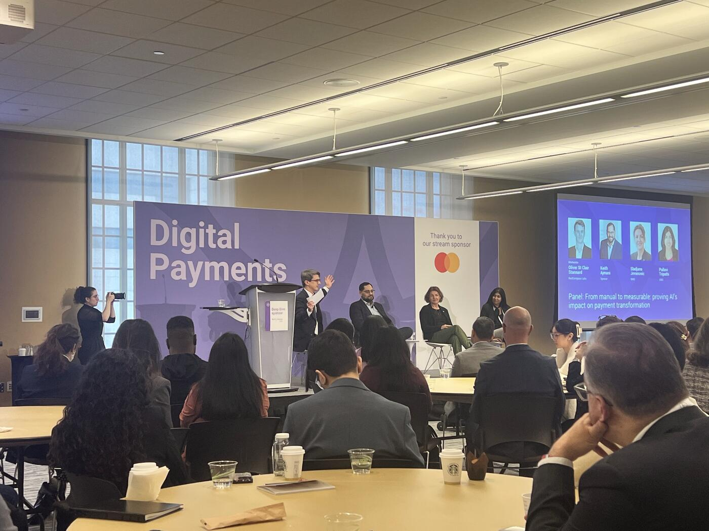

Setting the Stage: The "Engine Room" Conversation
The moderator framed this as the "engine room" conversation of the summit — less about hype, more about operational reality.
A few strong themes emerged immediately:
- AI is no longer being discussed theoretically. The conversation has shifted from "what is AI?" to "how do we prove measurable impact?"
- Payments transformation itself remains highly manual, even if payment processing is already highly automated.
- The critical challenge is measurement and accountability: proving ROI, operational efficiency, resiliency gains, and transformation outcomes.
- Governance, ethical AI, and organizational readiness are now foundational prerequisites, not optional side topics.
Sladjana Jovanovic (BMO): The Two-Year Preparation Phase

Sladjana Jovanovic gave one of the clearest summaries of where large financial institutions currently are in the AI journey. She described the last two years as a preparation phase:
- Rolling out copilots and assistants
- Training employees and developers
- Experimenting with use cases
- Using AI for requirements generation, reverse engineering, testing, and validation
She also highlighted that BMO's publicly announced billion-dollar AI investment did not happen "overnight," but was built on foundational work already completed across the organization.
Three pillars stood out in her remarks:
1. AI as core strategy — AI is no longer a side innovation initiative. At BMO, it has become embedded into the bank's central growth and transformation strategy alongside digitization and resiliency.
2. Ethical and Responsible AI — She strongly emphasized fairness, transparency, security, accountability, and trust, noting that institutions are now pushing model creators themselves to prioritize ethical behavior over purely "pleasing" outputs.
3. Governance — Perhaps the most operationally important point. She noted the rise of governance structures, including Chief AI Officer roles, to track where AI is being used, prioritize customer-focused use cases, and ensure compliance and accountability.
One particularly interesting operational insight was BMO's internal chatbot implementation:
- Connected to roughly 8,000 policy documents
- Handling around a million questions
- Leveraging vector databases and retrieval-based architectures
That example grounded the discussion in practical enterprise deployment rather than conceptual AI discussion.
The moderator also introduced an interesting concept from RedCompass Labs called "Built by AI," intended as a framework or "strawman" for measuring AI's impact on the software development lifecycle.
Keith Ajmani: Spec First, Code Second
Keith Ajmani emphasized a critical point that contrasted sharply with the public perception of AI-assisted coding: successful enterprise AI development is not about simply asking AI to "rewrite the code."
Instead, he described a highly structured, specification-driven approach.
One of the examples he shared involved modernizing an application that already contained security defects. The goal was not to replicate the legacy behavior blindly. The team first had to:
- Understand the existing functionality
- Extract and validate business logic
- Define explicit boundaries and constraints
- Review specifications with humans
- Only then move into code generation and testing
"You don't start by generating code. You start by generating specifications."
That became one of the strongest themes of the session: AI effectiveness depends heavily on the quality of context engineering, governance, and human oversight.
Interestingly, he argued that AI-driven modernization did not just improve speed. In some cases, it actually increased rigor and quality compared to traditional approaches.
The moderator connected this to the broader challenge in payments technology, where systems cannot tolerate failure:
"We can't get it wrong anywhere. But especially when it comes to markets."
Pallavi Tripathi (CIBC): GPS vs. Self-Driving Car
That led into a deeper architectural discussion from Pallavi Tripathi, who described how CIBC is thinking about AI not merely as a productivity tool, but as a foundational architectural layer.
One of her most memorable comparisons framed the difference in mindset:
- Adding AI tools to existing workflows is like "adding a new GPS to your car,"
- Whereas the bank's broader ambition is closer to "building an autonomous self-driving vehicle."
She also directly addressed the tension between fintech agility and enterprise banking complexity.
Fintechs, she acknowledged, can move significantly faster because they do not carry decades of legacy infrastructure and operational constraints. Large banks, however, are effectively:
"redesigning the engine while mid-flight."
That captured the operational reality of large-scale financial institutions: thousands of interconnected systems, regulatory obligations, cybersecurity requirements, resiliency expectations, and mission-critical uptime requirements, all while simultaneously attempting modernization.
The SDLC Hasn't Really Changed
Her observations about the software development lifecycle (SDLC) were also notable. She argued that despite Agile transformations over the past two decades, the underlying mechanics of enterprise delivery have remained largely unchanged:
- Requirements → Design → Development → Testing → Deployment — with manual handoffs and organizational silos still intact.
From her perspective, AI creates the first real opportunity to fundamentally redesign the end-to-end delivery lifecycle rather than merely accelerating isolated tasks.
Governance as an Enabler
Another important insight was her reframing of governance and controls. Instead of treating governance, cyber, and compliance as barriers or "guardrails," she suggested institutions should treat them as:
"enablers of faster delivery."
Core-to-Edge Operating Model
She also described a "core-to-edge" operational model:
- Core systems prioritize sovereignty, resiliency, and reliability.
- Edge environments allow experimentation, prototyping, and faster iteration.
Importantly, she stressed that governance and compliance still apply to both environments, but with different operational tolerances and delivery models.
The Regulatory Reality
This portion of the discussion exposed one of the central tensions in enterprise AI adoption within financial services: the conflict between innovation speed and regulatory accountability.
Keith Ajmani pushed back on the common comparison between fintech agility and bank execution speed by highlighting something often overlooked in AI discussions: regulatory oversight and model governance.
He referenced Canada's evolving model risk management expectations, specifically OSFI's guidance around AI and model governance, noting that banks cannot simply "pick up the latest model" and deploy it into production environments the way startups might.
The issue, he explained, is not traditional machine learning itself. Financial institutions have been using machine learning models for years. The real challenge is generative AI:
- Non-deterministic outputs
- Hallucination risks
- Opaque reasoning
- Uncertain training data provenance
- Explainability concerns
One of the strongest moments came when he joked:
"I don't need a model that understands all of Shakespeare's plays ever published to refactor an application."
The comment captured an important architectural trend: smaller, constrained, domain-specific models are often more practical and governable than massive generalized models.
He also gave a very practical example of governance expansion, mentioning that even long-established machine learning models are now triggering extensive governance reviews and documentation requirements inside banks.
The Inversion: Now Business Is Pushing AI
Moderator Oliver St Clair Stannard then steered the conversation toward a broader industry shift that appears to have accelerated dramatically over the past year.
According to him, the dynamic has inverted:
- A year ago, technologists were the ones pushing AI adoption while business and governance teams were cautious.
- Now, executives and business leaders are aggressively demanding AI scaling and measurable outcomes, while technology teams are often the ones applying caution due to operational realities.
Sladjana Jovanovic confirmed that most major banks are now formally setting measurable AI targets:
"Unless you measure it, unless you set targets, it's not happening."
Her comments suggested that AI has now moved beyond experimentation into formal enterprise execution management.
She also highlighted an interesting secondary effect: AI investment commitments are giving technology leaders leverage to modernize underlying infrastructure and processes that previously struggled to get executive attention.
Another major shift: pressure from employees and business partners using consumer AI tools outside the enterprise and returning with expectations that the bank should provide similarly capable internal systems. That pressure creates a scaling challenge — too many tools, too many disconnected experiments, too many competing platforms.
Her response: discipline and standardization. BMO's approach is a structured roadmap:
- Mapping AI capabilities across SDLC stages
- Aligning tools with specific delivery phases
- Onboarding and training teams systematically
- Measuring efficiency improvements over time
An especially notable insight was her connection between AI transformation and Agile delivery practices. Rather than presenting AI as a replacement for Agile, she argued that AI actually reinforces core Agile engineering principles: resiliency, security, automation, continuous improvement, and measurable value delivery.
Her framing implied that organizations with mature engineering discipline and Agile foundations are likely better positioned to scale AI effectively than organizations trying to layer AI on top of fragmented delivery practices.
The Punchline
The panel increasingly converged around one key conclusion:
AI transformation inside banking is no longer primarily a technology problem.
It is becoming:
- A governance problem
- An operational discipline problem
- A measurement problem
- An organizational scaling problem
Key Takeaways
- BMO's $1B AI investment is built on top of two years of foundational copilots, training, and use-case experimentation.
- Internal chatbot: 8,000 policy documents → 1M questions handled.
- "Don't start by generating code. Start by generating specifications." — context engineering > raw AI horsepower.
- CIBC's framing: GPS vs. self-driving car. Banks are "redesigning the engine while mid-flight."
- "I don't need a model that understands all of Shakespeare's plays ever published to refactor an application." — push toward smaller, domain-specific, governable models.
- Core + edge operating model: different tolerances, same governance.
- Inversion of pressure: a year ago technologists pushed AI; now business pushes, technologists caution.
- Banks are now setting measurable AI targets — "if you don't measure it, it's not happening."
- AI is now a governance / discipline / measurement / scaling problem, not a technology problem.